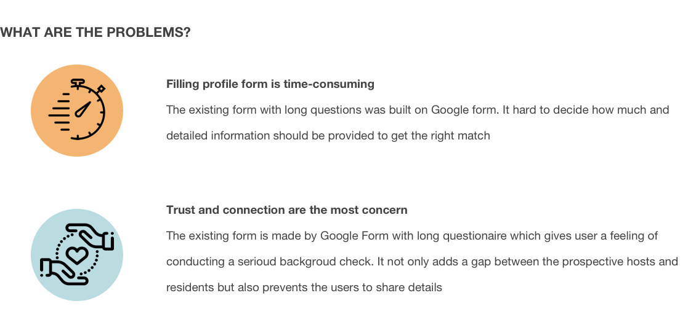
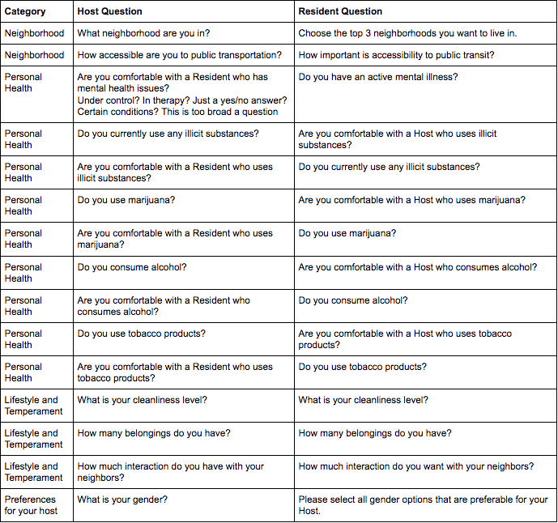
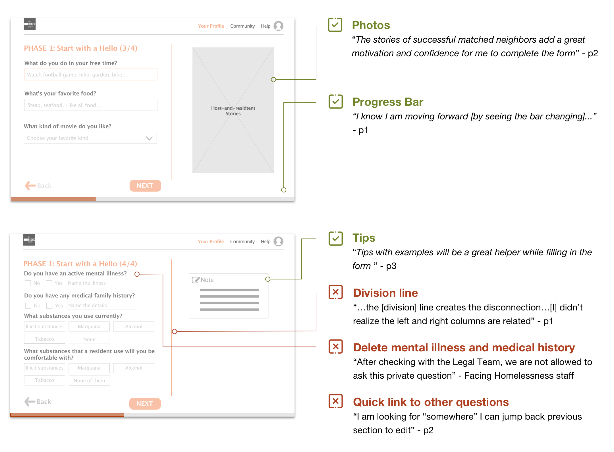

PROCESS

Image: Process Timeline
— Process 1 of 5 —
Emphasize
User Research
To understand how the project works and who is involved in each journey stage, I created the stakeholder map, conducted a staff interview & group observation, and mapped an existing user journey.
Stakeholder map: At the beginning of the research, I studied The BLOCK Project and outlined the stakeholder journey map to give me a holistic view of the project.
{kind=link}
Image: Stakeholder map
Staff interview & Group observation: To gain a better understanding of the organization, project, and targeted users, I carried out a 1.5-hours staff interview at Facing Homelessness and also participated with the Community Bridging event at a local coffee shop where both neighbors living outside and inside were invited for conversation and connection. I acted as one of the participants to observe other prospective hosts. These two events helped me to:
- recognize The BLOCK Project’s current focus
- gain the knowledge of how the project works in detail
- uncover the stakeholders’ behaviors, needs and challenges
“The team is working hard on optimizing our Matching phase which plays a significant role in fueling The BLOCK Project. ”
Sarah, Community Director at Facing Homelessness
Existing user journey: Based on the organization’s current focus, I created an existing user journey which highlights the interaction and touchpoints for the stakeholders to improve the matching process.
{kind=link}
Image: Existing matching journey for all stakeholders
— Process 1 of 5 —
Define
Project Scope
There are three main stages in the matching process: (1) completing profiles, (2) matching host and resident, and (3) maintaining the host-and-resident relationship. Under the time constraint, our team decided to touch on the first stage- improving the profile building experience.
Define Users and Problems
{kind=link}
— Process 3 of 5 —
Ideate
Market Research
To generate new ideas around problems, I conducted ananalogous inspiration exercise, re-organized content inventory, created Information Architecture and wireframes.
Analogous Inspiration: To get inspiration of creating a profile form with better user experience, I probed the profile process of Airbnb and HomeAway. The former shares the strong connections between the host and the guest while the latter focuses on providing the best for the family’s memory. They are all about sharing the space by creating the best human connection.

Image: Analogous inspiration
Content Inventory: To make the long questionnaire easy to complete, I divided the original questionnaire into three sections and then re-organized each question into new section and also added the column for side-note/tips
- Start with Hello
- Share your backyard
- Set expectation
Original questionnaire
{kind=link}
{kind=link}
Information architecture: Prior to prototyping, I created the information architecture from the discussion with engineers. I envisioned three phases of the Matching process to make the project more consistent and scalable for the long-term design.
{kind=link}
Wireframes: I listed the key call-to-actions for each user type and sketched out six pages which contains key steps for users to take action.
{kind=link}
Image: Initial wireframe for main pages
— Process 4 of 5 —
Prototype
Low-fidelity Prototype
Based on the initial sketch structure, I came up with a low-fidelity prototype for the primary user types, Hosts and Caseworkers, in Sketch.
{kind=link}
Image: Low-fidelity prototype
Iteration
Though I had limitation to get access to the real Caseworkers and Hosts, I brought the prototype design to get critique and feedback from Facing Homeless staffs, who work closely with the other users and four participants who have strong interest in The BLACK PROJECT from my professional network.
Main feedback:
{kind=link}
Image: Things to keep and leave behind
— Process 5 of 5 —
Implement
Design Implementation
As the developers opted for ember.js as the project's developing framework, I learned how to edit HTML/Sass and implemented the final prototype design to ember.js.
Revised user flow During the development, we improved the user flow and are working on the final touches before launching the web app in June.

Image: Communicating with the Facing Homelessness staff and engineers on the revised user flow
SOLUTIONS
Key features
Four key features were designed to help Hosts and Caseworks to complete the profile form more efficiently and in a trust-worthy approach.

Latest live site
The site is live now for testing and keep optimizing it by gathering more feedback from real users.
NEXT STEP

Image: Sneak peek for the next step